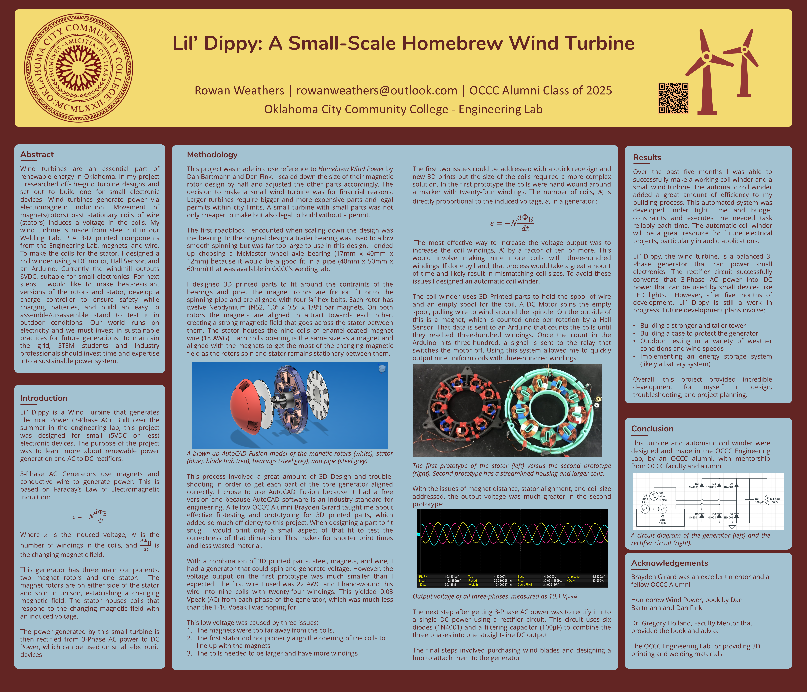
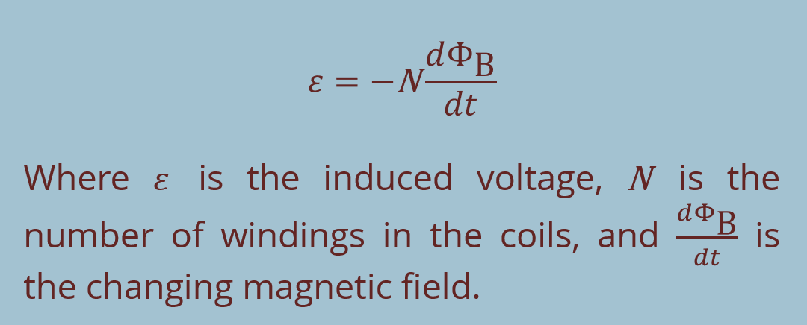
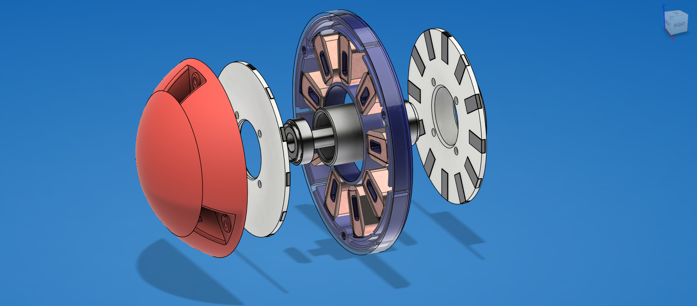
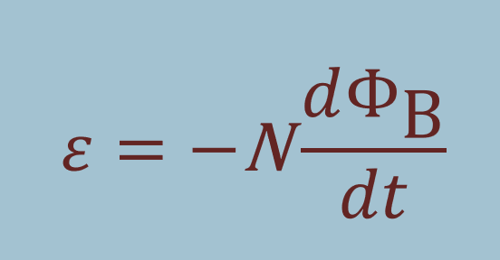
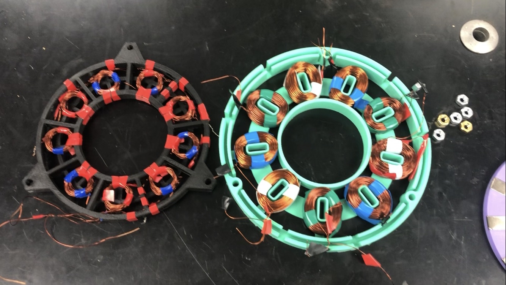
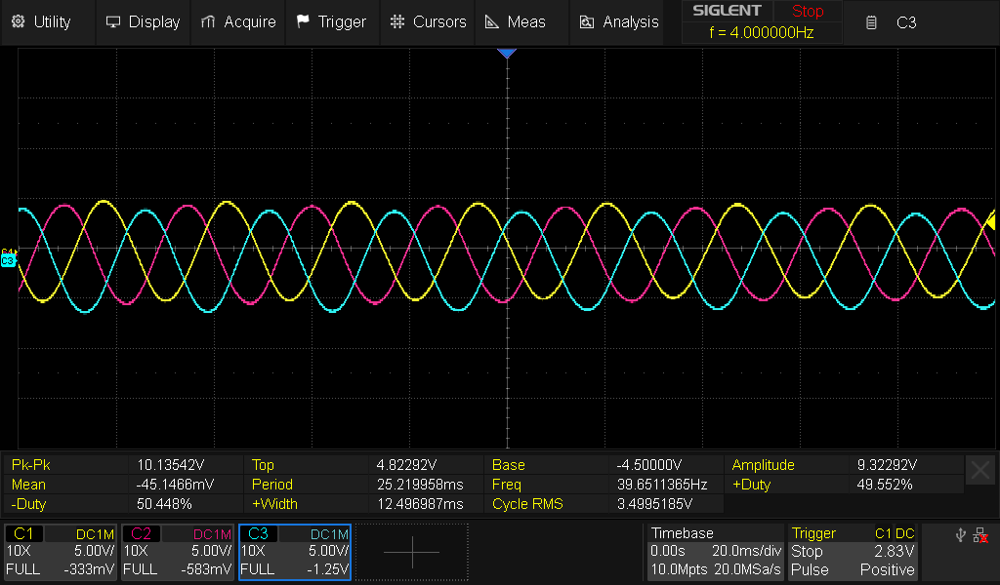
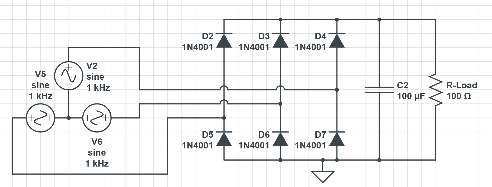

Background:
It was the summer after my sophomore semester and I had been rejected from every summer internship I applied to. I was beyond bummed and really wanted to get some exposure into power generation - so I made a mini windmill. Along the way, I got so sick of handwinding copper coils that I went ahead and made an automatic coil winder too. This project was a huge step in my engineering development and also helped open the door to my first internship at OG&E the following summer.

Abstract: Wind turbines are an essential part of renewable energy in Oklahoma. In my project I researched off-the-grid turbine designs and set out to build one for small electronic devices. Wind turbines generate power via electromagnetic induction. Movement of magnets(rotors) past stationary coils of wire (stators) induces a voltage in the coils. My wind turbine is made from steel cut in our Welding Lab, PLA 3-D printed components from the Engineering Lab, magnets, and wire. To make the coils for the stator, I designed a coil winder using a DC motor, Hall Sensor, and an Arduino. Currently the windmill outputs 6VDC, suitable for small electronics. For next steps I would like to make heat-resistant versions of the rotors and stator, develop a charge controller to ensure safety while charging batteries, and build an easy to assemble/disassemble stand to test it in outdoor conditions. Our world runs on electricity and we must invest in sustainable practices for future generations. To maintain the grid, STEM students and industry professionals should invest time and expertise into a sustainable power system.
Introduction: Lil’ Dippy is a Wind Turbine that generates Electrical Power (3-Phase AC). Built over the summer in the engineering lab, this project was designed for small (5VDC or less) electronic devices. The purpose of the project was to learn more about renewable power generation and AC to DC rectifiers.
3-Phase AC Generators use magnets and conductive wire to generate power. This is based on Faraday’s Law of Electromagnetic Induction:

This generator has three main components: two magnet rotors and one stator. The magnet rotors are on either side of the stator and spin in unison, establishing a changing magnetic field. The stator houses coils that respond to the changing magnetic field with an induced voltage.
The power generated by this small turbine is then rectified from 3-Phase AC power to DC Power, which can be used on small electronic devices.
Methodology: This project was made in close reference to Homebrew Wind Power by Dan Bartmann and Dan Fink. I scaled down the size of their magnetic rotor design by half and adjusted the other parts accordingly. The decision to make a small wind turbine was for financial reasons. Larger turbines require bigger and more expensive parts and legal permits within city limits. A small turbine with small parts was not only cheaper to make but also legal to build without a permit.
The first roadblock I encounted when scaling down the design was the bearing. In the original design a trailer bearing was used to allow smooth spinning but was far too large to use in this design. I ended up choosing a McMaster wheel axle bearing (17mm x 40mm x 12mm) because it would be a good fit in a pipe (40mm x 50mm x 60mm) that was available in OCCC’s welding lab.
I designed 3D printed parts to fit around the contraints of the bearings and pipe. The magnet rotors are friction fit onto the spinning pipe and are aligned with four ¼” hex bolts. Each rotor has twelve Neodymium (N52, 1.0” x 0.5” x 1/8”) bar magnets. On both rotors the magnets are aligned to attract towards each other, creating a strong magnetic field that goes across the stator between them. The stator houses the nine coils of enamel-coated magnet wire (18 AWG). Each coil’s opening is the same size as a magnet and aligned with the magnets to get the most of the changing magnetic field as the rotors spin and stator remains stationary between them.

A blown-up AutoCAD Fusion model of the manetic rotors (white), stator (blue), blade hub (red), bearings (steel grey), and pipe (steel grey).
This process involved a great amount of 3D Design and trouble-shooting in order to get each part of the core generator aligned correctly. I chose to use AutoCAD Fusion because it had a free version and because AutoCAD software is an industry standard for engineering. A fellow OCCC Alumni Brayden Girard taught me about effective fit-testing and prototyping for 3D printed parts, which added so much efficiency to this project. When designing a part to fit snug, I would print only a small aspect of that fit to test the correctness of that dimension. This makes for shorter print times and less wasted material.
With a combination of 3D printed parts, steel, magnets, and wire, I had a generator that could spin and generate voltage. However, the voltage output on the first prototype was much smaller than I expected. The first wire I used was 22 AWG and I hand-wound this wire into nine coils with twenty-four windings. This yielded 0.03 Vpeak (AC) from each phase of the enerator, which was much less than the 1-10 Vpeak I was hoping for.
This low voltage was caused by three issues:
- The magnets were too far away from the coils.
- The first stator did not properly align the opening of the coils to line up with the magnets
- The coils needed to be larger and have more windings
The first two issues could be addressed with a quick redesign and new 3D prints but the size of the coils required a more complex solution. In the first prototype the coils were hand wound around a marker with twenty-four windings. The number of coils, "N," is directly proportional to the induced voltage, 𝜀, in a generator :

The most effective way to increase the voltage output was to increase the coil windings, "N", by a factor of ten or more. This would involve making nine more coils with three-hundred windings. If done by hand, that process would take a great amount of time and likely result in mismatching coil sizes. To avoid these issues I designed an automatic coil winder.
The coil winder uses 3D Printed parts to hold the spool of wire and an empty spool for the coil. A DC Motor spins the empty spool, pulling wire to wind around the spindle. On the outside of this is a magnet, which is counted once per rotation by a Hall Sensor. That data is sent to an Arduino that counts the coils until they reached three-hundred windings. Once the count in the Arduino hits three-hundred, a signal is sent to the relay that switches the motor off. Using this system allowed me to quickly output nine uniform coils with three-hundred windings.

The first prototype of the stator (left) versus the second prototype (right). Second prototype has a streamlined housing and larger coils
With the issues of magnet distance, stator alignment, and coil size addressed, the output voltage was much greater in the second prototype:

Output voltage of all three-phases, measured as 10.1 Vpeak.
The next step after getting 3-Phase AC power was to rectify it into a single DC power using a rectifier circuit. This circuit uses six diodes (1N4001) and a filtering capacitor (100μF) to combine the three phases into one straight-line DC output.
The final steps involved purchasing wind blades and designing a hub to attach them to the generator.
Results: Over the past five months I was able to successfully make a working coil winder and a small wind turbine. The automatic coil winder added a great amount of efficiency to my building process. This automated system was developed under tight time and budget constraints and executes the needed task reliably each time. The automatic coil winder will be a great resource for future electrical projects, particularly in audio applications.
Lil’ Dippy, the wind turbine, is a balanced 3-Phase generator that can power small electronics. The rectifier circuit successfully converts that 3-Phase AC power into DC power that can be used by small devices like LED lights. However, after five months of development, Lil’ Dippy is still a work in progress. Future development plans involve:
- Building a stronger and taller tower
- Building a case to protect the generator
- Outdoor testing in a variety of weather conditions and wind speeds
- Implementing an energy storage system (likely a battery system)
Overall, this project provided incredible development for myself in design, troubleshooting, and project planning.
Conclusion: This turbine and automatic coil winder were designed and made in the OCCC Engineering Lab, by an OCCC alumni, with mentorship from OCCC faculty and alumni.

A circuit diagram of the generator (left) and the rectifier circuit (right).
Acknowledgements: Brayden Girard was an excellent mentor and a fellow OCCC Alumni, Homebrew Wind Power, book by Dan Bartmann and Dan Fink, Dr. Gregory Holland, Faculty Mentor that provided the book and advice, and the OCCC Engineering Lab for providing 3D printing and welding materials.